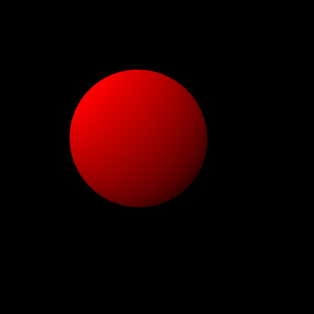
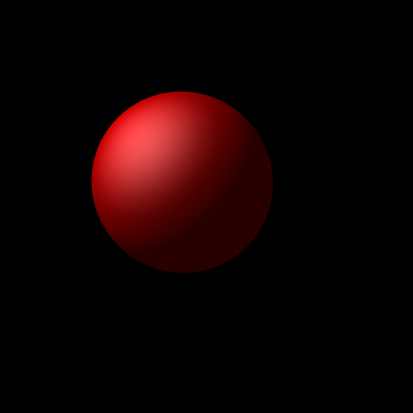
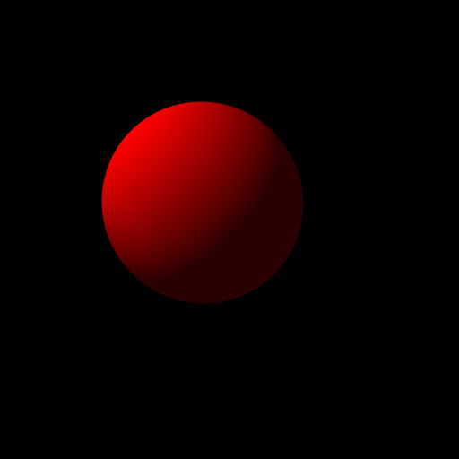

I have converted my renderer to a plugin-based architecture, using GNU
guile as a front-end language.

A sphere with Gooch-style shading, accomplished via the same
general-purpose shader plugin as the others.

A sphere with Lambertian reflection, slight ambient illumination, and
Phong-style specular highlights.

A sphere with Lambertian reflection, and very slight ambient
illumination.